Thời gian: 35 phút. Còn 10 phút hệ thống nhắc; hết giờ có thêm 5 phút gia hạn rồi tự động nộp.
Bài làm ở chế độ toàn màn hình. Chuyển tab, mất focus, thoát toàn màn hình đều bị ghi nhận và báo cho giáo viên.
Không dùng chuột phải, sao chép/dán, phím tắt. Đáp án và giải thích chi tiết hiển thị sau khi nộp bài.
Đã nghe: 0/3 lần. Số lần nghe tối đa: 3.
Question 1. Listen and tick (✓ = True) or cross (✗ = False) (nghe, tranh đúng thì chọn True, sai thì chọn False; tranh A là ví dụ).
1
Nghe và quyết định: nội dung nghe có đúng với tranh không? (✓ = True, ✗ = False)
2
Nghe và quyết định: nội dung nghe có đúng với tranh không? (✓ = True, ✗ = False)
3
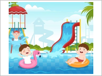
Nghe và quyết định: nội dung nghe có đúng với tranh không? (✓ = True, ✗ = False)
4
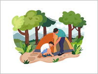
Nghe và quyết định: nội dung nghe có đúng với tranh không? (✓ = True, ✗ = False)
Question 2. Listen and write Yes or No (nghe, chọn Yes hoặc No cho mỗi tranh).
5
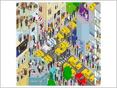
Nghe và chọn Yes hoặc No cho tranh này.
6
Nghe và chọn Yes hoặc No cho tranh này.
7
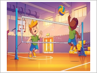
Nghe và chọn Yes hoặc No cho tranh này.
8
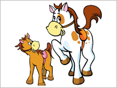
Nghe và chọn Yes hoặc No cho tranh này.
Question 3. Listen to the dialogue and complete (nghe đoạn hội thoại và điền từ).
Boy: Hi, can I ask you some questions for my assignment? Girl: (0) Yes, please go ahead. Boy: What do you do (1) ______? Girl: I do my homework. Boy: What about your sister? What does she do at noon? Girl: She (2) ______. Boy: OK, I already take note. Now, I want to go to the (3) ______. Where’s it? Girl: It’s in Green Street. Boy: How can I get there? Girl: You can (4) ______ and turn left.
9
Chỗ trống (1):
10
Chỗ trống (2):
11
Chỗ trống (3):
12
Chỗ trống (4):
Question 4. Read and choose A, B or C (đọc và chọn tranh đúng).
13
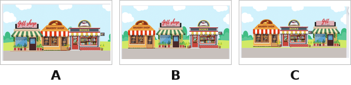
The gift shop is between the bookshop and the bakery.
14
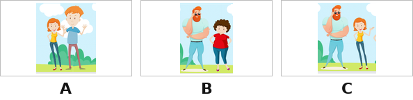
What do your parents look like? – My father is big and tall, and my mother is slim and short.
15
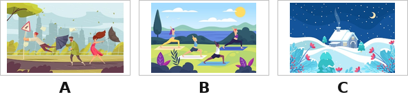
What was the weather like last weekend? – It was windy and rainy.
16
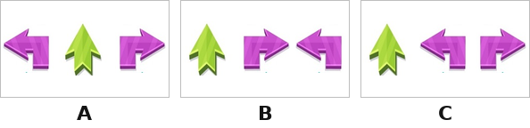
How can I get to the water park? – Go straight, turn left, then turn right. The water park is on the left.
Question 5. Read and match (nối câu hỏi với câu trả lời; câu 0 “How much is the skirt?” – C là ví dụ).
17
Nối (chọn đáp án đúng cho từng dòng):
Why do you like giraffes?→
What’s Huong doing?→
What does your sister do on Sundays?→
Question 6. Read and tick True or False (đọc đoạn văn, chọn True hoặc False).
Thuy Duong loves the weekends so much. On Saturdays, her mother brings her to the supermarket to buy groceries and milk in the morning. On Saturday afternoon, Thuy Duong’s favorite hobby is flying a kite with her father. Or they cycle around the village. On Sundays, the family clean the house and cook meals together. They love watching television or listening to music on Sunday evening. They are a happy family.
18
Thuy Duong likes flying a kite with her father on Saturdays.
19
On Sundays, her family do housework and cook meals together.
20
Her family love watching television or listening to music on Saturday evening.
Question 7. Fill in the blanks to make complete words (nhìn tranh, điền từ hoàn chỉnh; gợi ý một số chữ cái).
21
F _ _ _ _ _ Y →
22
_ I _ _ _ →
23
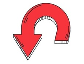
T _ _ _ R _ U _ _ → (2 từ, gõ cách nhau)
24
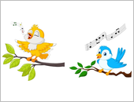
_ I _ _ M _ R _ _ _ _ → (2 từ, gõ cách nhau)
Question 8. Reorder the words to make complete sentences (sắp xếp từ thành câu đúng).
25
Sắp xếp thành câu đúng:
26
Sắp xếp thành câu đúng:
27
Sắp xếp thành câu đúng:
Question 9. Look at the pictures and answer the questions (nhìn tranh, trả lời câu hỏi).
28
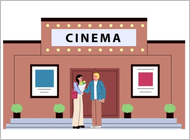
Where does your sister go on Saturdays? →
29
What’s the weather like today? →
30
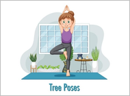
What does she do in the morning? →
--:--
Bắt đầu làm bài kiểm tra
Nhập thông tin để hệ thống ghi nhận kết quả.
Nhắc giờ
⏰ Đã hết giờ làm bài
Bạn có thêm 5 phút để hoàn tất. Hết 5 phút bài sẽ tự động nộp.
⚠ Bạn đã thoát toàn màn hình
Hành vi này đã được ghi nhận. Hãy quay lại chế độ toàn màn hình để tiếp tục làm bài.